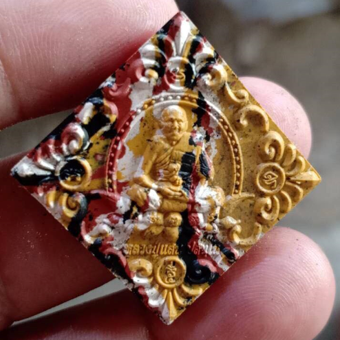

<ion-header>
  <ion-toolbar color="warning">
    <ion-title style="color: black">ข้อมูลพระ</ion-title>
    <ion-buttons style="color: black" slot="start">
      <ion-back-button></ion-back-button>
    </ion-buttons>
  </ion-toolbar>
</ion-header>

<ion-content text-center color="warning">
  <ion-row style="color: black">

    <ion-col size="10"></ion-col>
    <ion-col size="2">{{ countmonk }}</ion-col>
  </ion-row>

  <ion-row style="color: black">
    <ion-col size="2"></ion-col>
    <ion-col size="8">
      <div *ngIf="getid == 1234">
        
      </div>
      <div *ngIf="getid == 123455">
        
      </div>
      <ion-col size="3">Serial: {{ getid }}</ion-col>
    </ion-col>
    <ion-col size="2"></ion-col>
  </ion-row>

  <!-- <ion-row style="color: black">
    <ion-col size="1"></ion-col>
    <ion-col size="10">

      <ion-label>ชื่อพระ    : {{ nameAmulet }}</ion-label><br>
      <ion-label>ประเภท   : {{ typeAmulet }}</ion-label><br>
      <ion-label>มวลสาร   : {{ compoundAmulet }}</ion-label><br>
      <ion-label>พิมพ์     : {{ shapeAmulet }}</ion-label><br>
      <ion-label>ชื่อวัด     : {{ temple }}</ion-label><br>
      <ion-label>จังหวัด    : {{ province }}</ion-label><br>
      <ion-label>วันที่สร้าง  : {{ dateConsecrate }}</ion-label><br>

    </ion-col>
    <ion-col size="1"></ion-col>
  </ion-row> -->
  <ion-list>
    <ion-item color="warning">
      <ion-label style="color: black">ชื่อพระ : {{ nameAmulet }}</ion-label>
    </ion-item>

    <ion-item color="warning">
      <ion-label style="color: black">ประเภท : {{ typeAmulet }}</ion-label>
    </ion-item>

    <ion-item color="warning">
      <ion-label style="color: black">มวลสาร : {{ compoundAmulet }}</ion-label>
    </ion-item>

    <ion-item color="warning">
      <ion-label style="color: black">พิมพ์ : {{ shapeAmulet }}</ion-label>
    </ion-item>

    <ion-item color="warning">
      <ion-label style="color: black">ชื่อวัด : {{ temple }}</ion-label>
    </ion-item>

    <ion-item color="warning">
      <ion-label style="color: black">จังหวัด : {{ province }}</ion-label>
    </ion-item>

    <ion-item color="warning">
      <ion-label style="color: black">วันที่สร้าง  : {{ dateConsecrate }}</ion-label>
    </ion-item>

  </ion-list>

</ion-content>